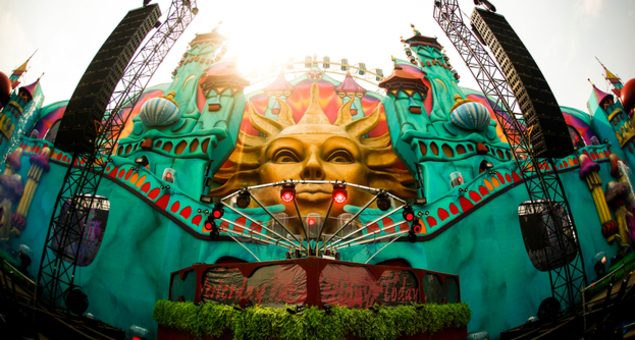

Tomorrowland drops massive aftermovie, announces 2013 dates


It’s not often the dance music massive gets overly excited about an ‘aftermovie’ for a festival, but Belgium’s Tomorrowland is a slightly different story. As we put it in ITM’s recent epic review “Beyond any doubt, it was that 2011 ‘Aftermovie’ that sold the entire world on Belgium’s Tomorrowland… It was a masterstroke of marketing, firmly cementing the festival’s enigma in the eyes of partygoers.” The 45+ million views on YouTube also indicated that it caught the attention of more than a few people.
This year’s edition of Tomorrowland similarly received a rapturous response from the more than 180,000 people who attended over the three days. “Most would struggle to even describe the dizzy journey that they went on over the three days,” ITM wrote of the 2012 event. “A week later, and you’re still dreaming about Tomorrowland.” Behold all 20 minutes of the aftermovie for this year’s event below, and for those extra keen among us to pencil in the dates for the next edition, promoters ID&T have announced that Tomorowland will return to Belgium on the 26th, 27th, 28th of July in 2013. Sold?